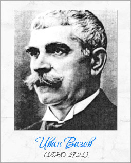

>Иван Вазов е роден на 27.06.1850 г. в гр. Сопот. Учи в родния си град, в Калофер и в Пловдив. Живее за кратко в Румъния, където срещата с хъшовете насочва младия поет към патриотично-граждански теми, на които остава верен цял живот. Работи като учител и преводач, включва се в различни родолюбиви начинания – преди и след Освобождението, за кратко е министър. Но основното му призвание – писателството – дава облика на живота му.